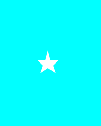

<!DOCTYPE html>
<html>

<head>
  <meta charset="utf-8">
  <meta name="viewport" content="width=device-width">
  <title>JS Bin</title>
  <style lang="">
    * {
      margin: 0;
      padding: 0;
    }

    body {
      overflow: hidden;
      --w: 30vw;
    }

    img {
      width: 100vw;
      height: 100vh;
    }

    .wrap {
      position: relative;
    }

    .wrap::after {
      content: '';
      position: absolute;
      z-index: 11;
      width: 100vw;
      height: 100vh;
      top: 0;
      left: 0;
      -webkit-mask: url(mask.svg);
      -webkit-mask-size: 100vw, 100%;
      -webkit-mask-repeat: no-repeat;
      -webkit-mask-position: 50% 50%;
      -webkit-mask-composite: xor;
      /*只显示不重合的地方， chorem 、safari 支持*/
      mask-composite: exclude;
      /* 排除，只显示不重合的地方， firefox 支持 */
      background:
        url('https://ts1.cn.mm.bing.net/th/id/R-C.0dee2228031e4ef5b03d0c5734aef866?rik=BD%2bnjbFbllVmEQ&riu=http%3a%2f%2fimg.zcool.cn%2fcommunity%2f01cf02554336f10000019ae9df1dad.jpg%403000w_1l_2o_100sh.jpg&ehk=zvcYgjHlqK2U2x9ploUbmiBIk7BewUd6lyA0AIswegQ%3d&risl=&pid=ImgRaw&r=0') no-repeat;
      background-size: 100% 100%;
      filter: drop-shadow(16px 16px 20px red);
      /* backdrop-filter: blur(5px); */
    }
  </style>
</head>

<body>
  <!--  -->
  <div class="wrap" id="img">
    
  </div>
  <script>
    img.addEventListener('mousemove', (ev) => {
      img.style.setProperty('--x', ev.offsetX / ev.target.offsetWidth);
      img.style.setProperty('--y', ev.offsetY / ev.target.offsetHeight);
    })
  </script>
</body>

</html>